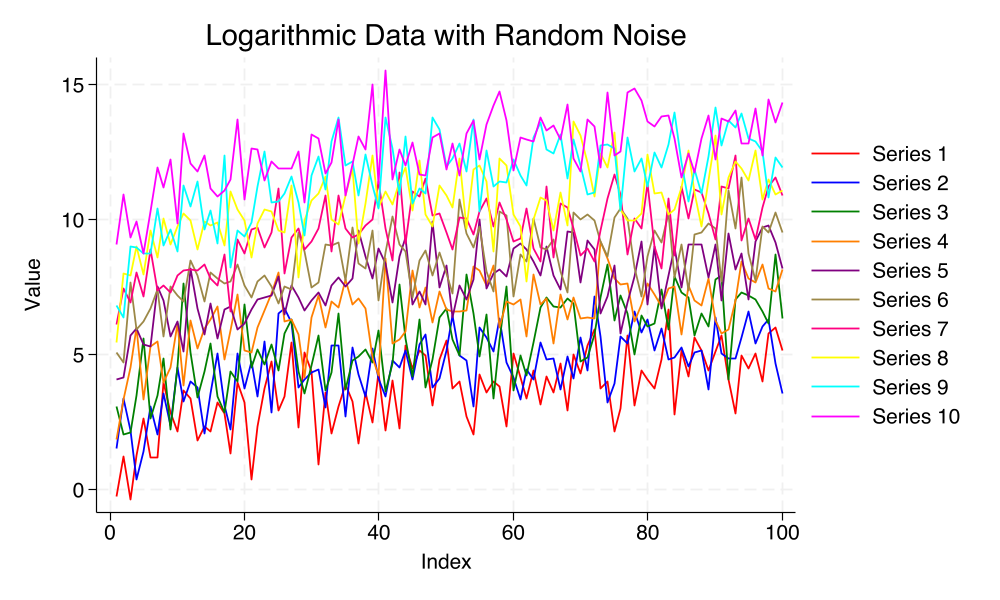

Stata#

Show code cell source
// Set the seed for reproducibility
set seed 19680801
// Number of series
local N 10
// Generate data
clear
set obs 100
forvalues i = 0/`=`N'-1' {
gen series`i' = log(_n) + rnormal() + `i'
}
// Reshape the data for plotting
gen index = _n
reshape long series, i(index) j(variable)
// Set up the custom color scheme
local colors "red blue green orange purple brown pink yellow cyan magenta"
// Create a macro to hold the plot commands
local plotcmds ""
forvalues i = 0/`=`N'-1' {
local color = word("`colors'", `=`i'+1')
local plotcmds `plotcmds' (line series index if variable == `i', lcolor("`color'"))
}
#delimit ;
twoway `plotcmds',
legend(order(1 "Series 1" 2 "Series 2" 3 "Series 3" 4 "Series 4" 5 "Series 5"
6 "Series 6" 7 "Series 7" 8 "Series 8" 9 "Series 9" 10 "Series 10"))
title("Logarithmic Data with Random Noise")
xtitle("Index")
ytitle("Value");
graph export "stata.png", width(1000) replace;
#delimit cr
Show code cell output
Number of observations (_N) was 0, now 100.
(j = 0 1 2 3 4 5 6 7 8 9)
Data Wide -> Long
-----------------------------------------------------------------------------
Number of observations 100 -> 1,000
Number of variables 11 -> 3
j variable (10 values) -> variable
xij variables:
series0 series1 ... series9 -> series
-----------------------------------------------------------------------------
file /Users/hades/.stata_kernel_cache/graph0.svg saved as SVG format
file /Users/hades/.stata_kernel_cache/graph0.pdf saved as PDF format
file stata.png written in PNG format
There is a lot more that you can do with outputs (such as including interactive outputs) with your book. For more information about this, see the Jupyter Book documentation
